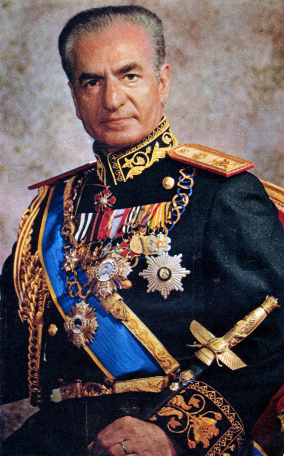

The Pahlavi Dynasty
The Iranian Revolution cannot be understood without examining the rule of the Pahlavi dynasty. Reza Shah Pahlavi founded the dynasty in 1925, promoting modernization and centralization of state power. After his abdication in 1941, his son, Mohammad Reza Shah Pahlavi, became the ruler of Iran.
Mohammad Reza Shah sought to transform Iran into a modern, industrialized nation. He invested heavily in infrastructure, military expansion, and urban development. However, his rule became increasingly authoritarian over time.
The 1953 Coup
In 1953, a major turning point occurred when Prime Minister Mohammad Mossadegh was removed from power in a coup supported by foreign intelligence agencies. Mossadegh had attempted to nationalize Iran’s oil industry, which threatened foreign economic interests.
After the coup, the Shah consolidated his authority. This event deeply influenced Iranian political consciousness, as many citizens viewed it as foreign interference in national sovereignty.
The White Revolution (1963)
In 1963, the Shah introduced a reform program known as the White Revolution. It included land reforms, women’s suffrage, expansion of literacy programs, industrial growth, and efforts to modernize rural areas.
While these reforms brought some economic growth and improved infrastructure, they also disrupted traditional social structures. Land redistribution weakened rural elites, and rapid urban migration created overcrowded cities and unemployment.
Economic Inequality and Oil Wealth
During the 1970s, rising oil prices significantly increased Iran’s national revenue. The country experienced rapid economic expansion. However, wealth distribution remained uneven. A small elite benefited greatly, while many middle- and lower-class citizens struggled with inflation and rising living costs.
Economic growth without political reform created tension. Many educated youth and workers felt excluded from meaningful participation in governance.
Political Repression and SAVAK
The Shah maintained strict political control through SAVAK, Iran’s secret police. Political parties were limited, dissent was suppressed, and critics were often imprisoned. Freedom of speech and press were restricted.
Over time, resentment grew among intellectuals, students, religious leaders, and political activists who demanded greater freedoms and democratic reforms.
Religious Leadership and Ayatollah Khomeini
Ayatollah Ruhollah Khomeini emerged as a prominent critic of the Shah’s policies. He opposed Western cultural influence and authoritarian governance. In 1964, he was exiled after publicly criticizing the regime.
Despite exile, Khomeini continued to communicate with supporters through recorded messages and religious networks. His message combined political resistance with religious authority, gaining widespread appeal.
Social and Cultural Tensions
Rapid Westernization created cultural divisions within Iranian society. While urban elites adopted Western lifestyles, many conservative and rural populations felt alienated. Dress codes, entertainment, and education reforms became points of cultural conflict.
These tensions gradually united diverse groups — religious conservatives, left-wing activists, nationalists, students, and workers — under a shared opposition to the Shah’s rule.
Growing Unrest in the Late 1970s
By the late 1970s, economic instability, inflation, unemployment, political repression, and cultural dissatisfaction converged. Public protests began to increase in frequency and intensity.
The government’s attempts to suppress demonstrations often resulted in violence, which further escalated resistance. By 1978, opposition had transformed into a full-scale revolutionary movement.
Rule of the Shah
Although these reforms improved infrastructure and education, critics argued that political freedoms were restricted and wealth distribution remained unequal.
Causes of the Revolution
- Authoritarian political system
- Economic disparities
- Religious opposition
- Public dissatisfaction with foreign influence